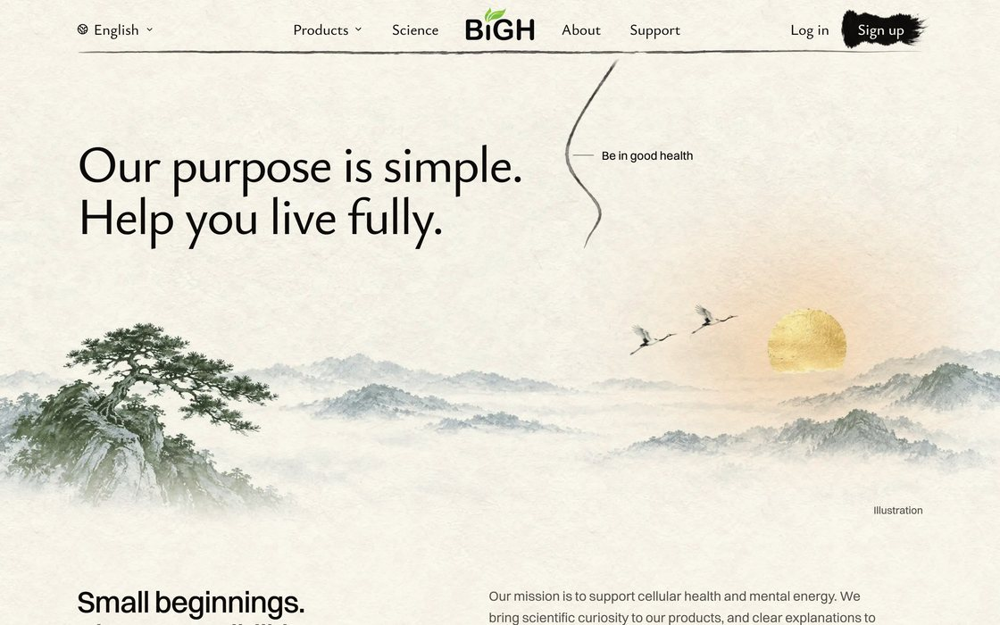
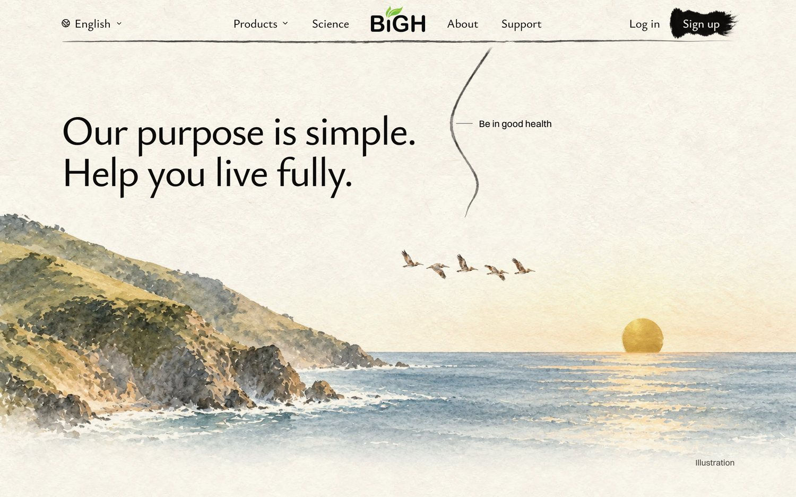
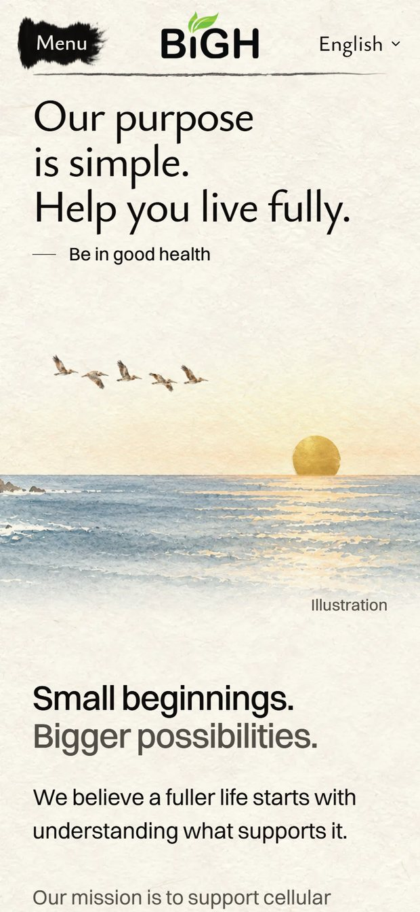
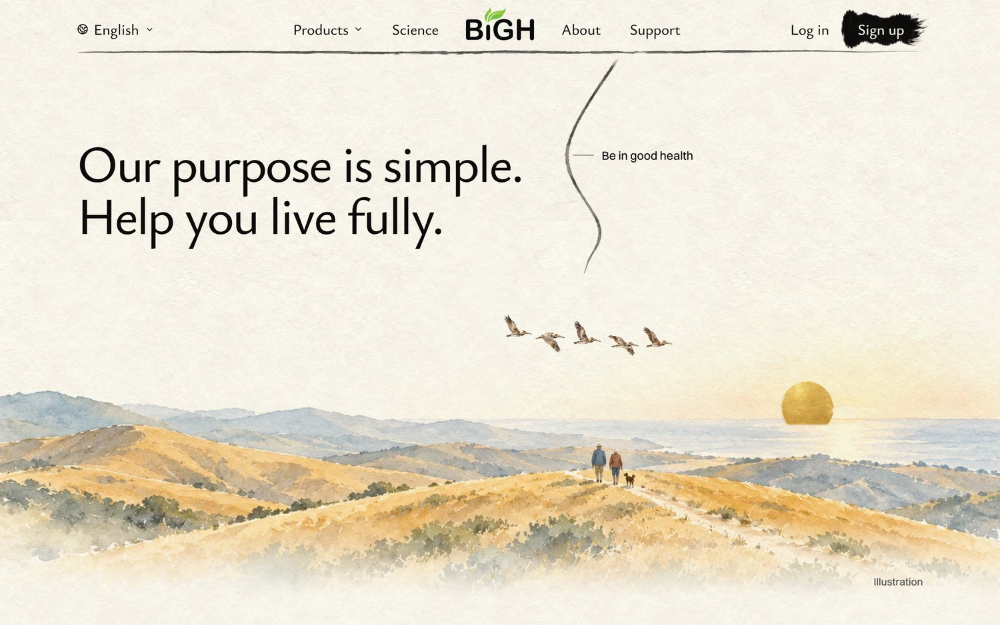
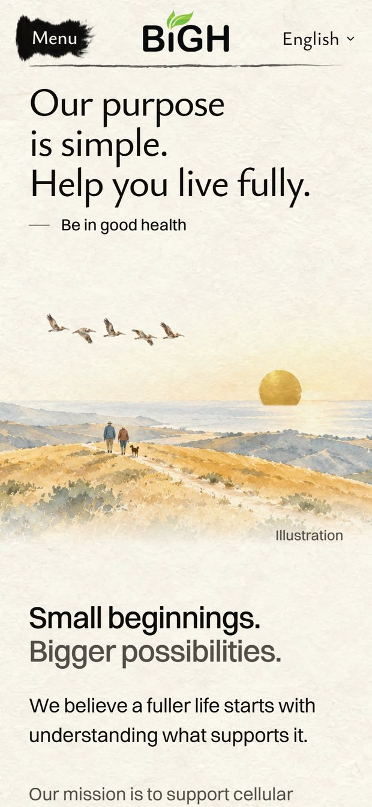
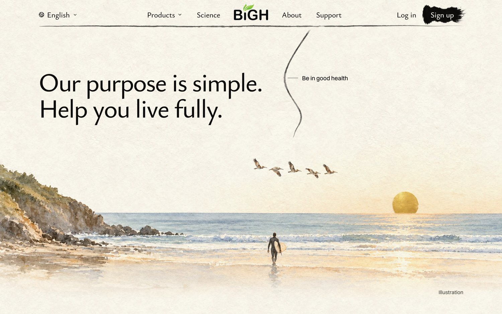
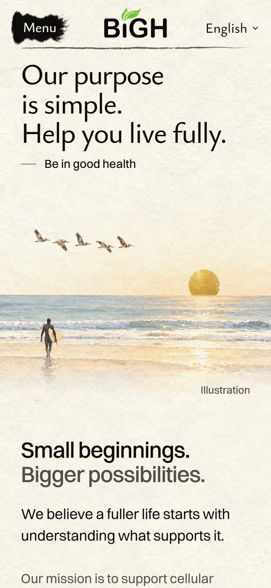

<title>Our Purpose Painting</title>
<meta name="claude:viewport-fit-sides" content="cover">
<link rel="preconnect" href="https://fonts.googleapis.com">
<link rel="preconnect" href="https://fonts.gstatic.com" crossorigin>
<link rel="stylesheet" href="https://fonts.googleapis.com/css2?family=Ysabeau:wght@500;650&display=swap">
<style>
  /* Layout: one column; each idea is its words, then the laptop and phone screens of the real
     homepage. */
  :root {
    --paper: #f6f1e7;
    --ink: #1d1b18;
    --ink-soft: #5d574e;
    --rule: #ddd4c4;
    --gold: #a77c25;
    --pick: #2f4a3a;
    --title: "Ysabeau", "Palatino Linotype", Palatino, Georgia, serif;
    --body: system-ui, -apple-system, "Segoe UI", Roboto, sans-serif;
  }
  @media (prefers-color-scheme: dark) {
    :root:not([data-theme="light"]) {
      --paper: #1b1a17; --ink: #f1ece2; --ink-soft: #b9b0a2;
      --rule: #3a3630; --gold: #d6aa52; --pick: #9cc3a8; color-scheme: dark;
    }
  }
  :root[data-theme="dark"] {
    --paper: #1b1a17; --ink: #f1ece2; --ink-soft: #b9b0a2;
    --rule: #3a3630; --gold: #d6aa52; --pick: #9cc3a8; color-scheme: dark;
  }
  body {
    background: var(--paper);
    color: var(--ink);
    font: 17px/1.55 var(--body);
    padding-left: max(16px, env(safe-area-inset-left, 0px));
    padding-right: max(16px, env(safe-area-inset-right, 0px));
  }
  main { max-width: 1100px; margin: 0 auto; padding-block: 40px 72px; display: grid; gap: 52px; }
  h1, h2 { font-family: var(--title); font-weight: 650; text-wrap: balance; margin: 0; letter-spacing: -0.01em; }
  h1 { font-size: clamp(34px, 6vw, 52px); line-height: 1.05; }
  h2 { font-size: clamp(26px, 4vw, 34px); line-height: 1.1; }
  p { margin: 0; max-width: 62ch; }
  ul { margin: 0; padding-left: 1.2em; max-width: 62ch; color: var(--ink-soft); display: grid; gap: 4px; }
  .intro { display: grid; gap: 12px; }
  .intro p { color: var(--ink-soft); font-size: 18px; }
  .today { width: min(100%, 560px); }
  .choice { display: grid; gap: 14px; padding-top: 26px; border-top: 1px solid var(--rule); }
  .head { display: flex; flex-wrap: wrap; align-items: baseline; gap: 10px 16px; }
  .letter { font-family: var(--title); font-size: clamp(44px, 7vw, 60px); line-height: 0.8; color: var(--gold); font-weight: 650; }
  .score { font: 600 15px/1 var(--body); font-variant-numeric: tabular-nums; padding: 7px 11px; border: 1px solid var(--rule); border-radius: 999px; color: var(--ink-soft); }
  .tag { font: 600 13px/1 var(--body); letter-spacing: 0.06em; text-transform: uppercase; color: var(--paper); background: var(--pick); padding: 7px 10px; border-radius: 999px; }
  .what { font-size: 18px; }
  .note { color: var(--ink-soft); }
  .shots { display: grid; grid-template-columns: 3fr 1fr; gap: 12px; align-items: start; }
  figure { margin: 0; display: grid; gap: 6px; min-width: 0; }
  figure img { display: block; width: 100%; height: auto; border: 1px solid var(--rule); border-radius: 6px; }
  figcaption { font-size: 13px; color: var(--ink-soft); letter-spacing: 0.02em; }
  @media (max-width: 640px) {
    .shots { grid-template-columns: 1fr; }
    .shots figure:last-child { width: 62%; }
  }
</style>
<main>
  <header class="intro">
    <h1>Our purpose, without the pine and the cranes</h1>
    <p>Three California endings for the homepage. Each is laid on the real page; the words stay.</p>
    <ul>
      <li>All three are evening: the page opens in the morning sequoias and ends at sunset, one full day.</li>
      <li>The gold sun is the same gold leaf as the opening's.</li>
      <li>The painting is a little taller than today's, so the land stays clear of the words.</li>
    </ul>
    <figure class="today"><figcaption>Today: the pine, the misty peaks and the cranes</figcaption></figure>
  </header>
  <section class="choice" aria-labelledby="big-sur-name">
    <div class="head">
      <span class="letter">A</span>
      <h2 id="big-sur-name">Big Sur at evening</h2>
      <span class="score">8.5 / 10</span>
      
    </div>
    <p class="what">The coast's green headland, the Pacific, the gold sun setting on the sea. Brown pelicans fly in as you scroll, where the cranes fly today.</p>
    <p class="note">The most beautiful place of the three. But it's only a place: nothing in it says "live fully".</p>
    <div class="shots">
      <figure><figcaption>Laptop</figcaption></figure>
      <figure><figcaption>Phone</figcaption></figure>
    </div>
  </section>
  <section class="choice" aria-labelledby="ridge-name">
    <div class="head">
      <span class="letter">B</span>
      <h2 id="ridge-name">An evening walk on the ridge</h2>
      <span class="score">9 / 10</span>
      <span class="tag">My pick</span>
    </div>
    <p class="what">An older couple and their dog walk a golden ridge toward the sea and the setting sun. The pelicans fly in above them.</p>
    <p class="note">It shows the words: people living fully. The one worry: golden hills are also About's first screen (there in spring poppies, here an evening walk).</p>
    <div class="shots">
      <figure><figcaption>Laptop</figcaption></figure>
      <figure><figcaption>Phone</figcaption></figure>
    </div>
  </section>
  <section class="choice" aria-labelledby="beach-name">
    <div class="head">
      <span class="letter">C</span>
      <h2 id="beach-name">A surfer at low tide</h2>
      <span class="score">8 / 10</span>
      
    </div>
    <p class="what">A surfer walks out across the wet sand toward the waves, the sun low on the sea, the pelicans above.</p>
    <p class="note">As California as it gets. But a surfer reads young and sporty for older readers, and the figure is the most detailed thing in it.</p>
    <div class="shots">
      <figure><figcaption>Laptop</figcaption></figure>
      <figure><figcaption>Phone</figcaption></figure>
    </div>
  </section>
</main>
